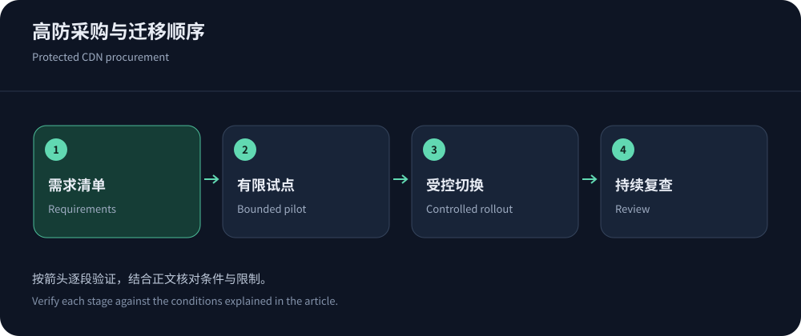
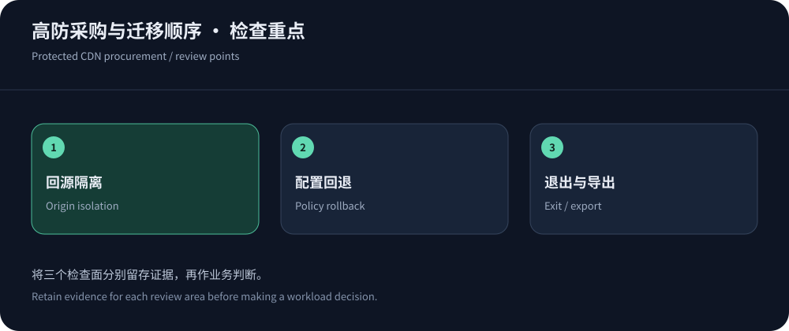

Write a one-page workload brief
Begin with domains, regions, delivery volume, peak requests, cacheable share, origins, protocols and business impact, not the largest advertised protection figure. A brochure site and payment API have different recovery priorities; game downloads and sessions are separate workloads.
Chinese-language teams can evaluate CDN5 alongside a suitable alternative. Procurement should define protected assets, legitimate traffic and operating responsibilities. Include historical attack figures only with measurement sources; leave unknowns as verification questions.
Apply hard requirements before preferences
Exclude plans missing required protocols, certificate handling, origin access or logs. Check WebSocket, uploads, HTTP methods, body inspection and API-compatible controls. Enterprises also need roles, audit trails and retention. A fast file transfer cannot compensate for an unsupported callback or connection type.
Published sources such as Cloudflare plans help identify tiers, but contracts and documentation govern details. Mark capabilities as published, awaiting confirmation or independently tested. Missing public information is not proof of absence; a listed feature is not proof of inclusion in the cheapest plan.


Prepare a representative trial and baseline
Trial versioned assets, anonymous pages, login and callbacks separately, using the same origin and content. Include ordinary user accounts and client types. Capture pre-change errors, transaction time and origin resources, then compare after rollout. Confirm trial billing and cancellation dates.
Cover mainland carriers and busy hours, or overseas locations matching customers. Retain failures and P95. The lab represents the current browser, not every user. Attack exercises require authorization, scope and stopping conditions; ordinary access tests should not be labeled mitigation benchmarks.
Design origin isolation before changing DNS
Audit historical addresses, alternate hostnames, mail and monitoring for bypasses. Restrict origin business ports to trusted proxies and isolate administration, preserving valid checks and emergency access. Verify origin TLS and supported authentication. Accept client-IP identity only from trusted proxies.
Validate the new edge-to-origin path before tightening old access. Otherwise certificate or Host errors can become an outage. Include IPv6 exposure. Use the layered protection guide to make origin isolation an acceptance requirement rather than an optional later optimization.
Roll out cache and security rules incrementally
Use RFC 9111 to distinguish shared caches, private responses and freshness. Explicitly exclude authenticated state, checkout and writes. Test updates, purging and refill peaks rather than improving hit ratio at the expense of correctness.
Observe WAF and limits before path-specific enforcement. Track legitimate success and false positives; distinguish browsers from APIs, crawlers, SDKs and callbacks. Keep rule versions and emergency rollback authority. Fixing one false positive should not require disabling every protection layer.
Discuss the clauses that affect operations
Itemize delivery, attacks, requests, logs, origin access and support. Define sharing, over-limit behavior, blackholing, recovery, SLA measurement and claim windows, plus domains, ports, add-ons, taxes and renewal. For choices such as CloudFront flat-rate and metered plans, normalize protected assets before comparing prices.
Put endpoint, protocol, support and log commitments into the order or contract. An unclear escalation path makes total cost uncertain. The pricing guide provides further breakdowns; recheck public prices when ordering.
For mainland nodes, verify ICP and onboarding eligibility separately. Offshore deployment does not remove every business obligation; record service regions and content scope explicitly.
Treat production rollout as a reversible change
Move noncritical resources first, with an owner, observation window and rollback criteria for each step. Preserve DNS, certificates and policy versions. TTL does not guarantee instantaneous global switching; retain the previous platform during transition. During an attack, rollback should remain protected.
Correlate edge and origin logs by region, carrier, address family, protocol and request ID. Expand only after critical paths pass acceptance. Roll back the affected change before diagnosing a serious failure. Reproducible rollout records support long-term operations better than undocumented success.


Acceptance should include review and exit
Accept correctness, legitimate access, updates, origin restrictions, log export, renewal and escalation with evidence and ownership. Define review triggers such as peaks, new regions, clients or protocols; last year’s suitable configuration may not remain suitable.
At exit, export policies, transition DNS, revoke tokens and obsolete ingress, and handle logs under agreed terms. Multiple CDNs need synchronized certificates and policies. Procurement is complete when the team knows onboarding, incident escalation, upgrade triggers and an orderly departure.